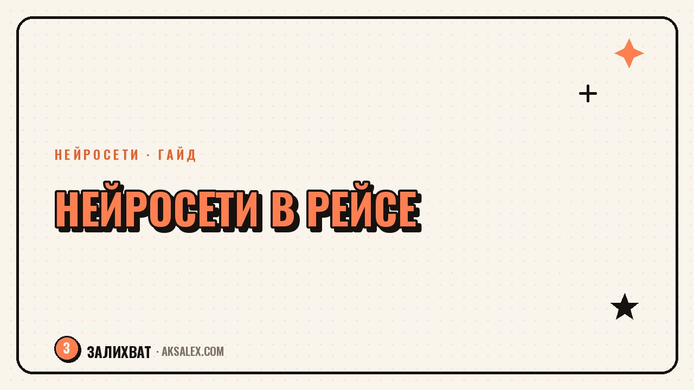

Нейросети для дальнобойщика: маршрут, учёт, документы

Рейс держится не только на дороге, но и на бумагах, цифрах и звонках: путевой лист, расход топлива, звонок диспетчеру, перевод накладной на границе. Нейросети не заменят опыт за рулём, но снимают часть рутины: помогают прикинуть маршрут с объездом, быстро посчитать расходы за неделю и перевести документ на пункте пропуска. Разберём, где это реально работает.
Зачем дальнобойщику разбираться в нейросетях
Работа дальнобойщика состоит не только из вождения. Параллельно идёт вторая работа: сверка грузов, расчёт топлива, переписка с заказчиком, путевой лист и отчёт по рейсу. Делается это чаще всего на коленке, вечером, на усталую голову.
Нейросеть здесь не водитель и не диспетчер. Это помощник, который берёт на себя черновую часть: составить текст заявки, свести цифры в таблицу или перевести накладную - голосом или текстом, с телефона на стоянке.
Что реально экономит время
- Черновик маршрута с учётом габаритов фуры и платных участков
- Перевод документов и переписки с иностранным заказчиком
- Сведение чеков за топливо и стоянки в понятную таблицу
- Готовый текст объяснительной, претензии или заявки диспетчеру
- Расшифровка голосовой заметки в текст отчёта о рейсе
Маршрут и топливо: где нейросеть реально помогает
Обычный навигатор строит маршрут для легковушки и спокойно заводит фуру под низкий мост или на улицу с запретом для грузового транспорта. Голосовой помощник на основе нейросети маршрут сам не прокладывает, но помогает прикинуть варианты: спросить про объезд или составить список заправок по пути.
Пример команды
Голосом на стоянке: 'Составь список пунктов, которые нужно проверить перед выездом в рейс на три дня зимой'. Нейросеть не знает точных цен на дизель сегодня, но посчитает арифметику, если дать ей цифры самому.
| Задача | Сервис | Нюанс |
|---|---|---|
| Навигация для грузовика | Яндекс Навигатор, Maps.me | Это не нейросеть, а база данных дорог |
| Голосовой помощник | GigaChat, YandexGPT | Не заменяет навигатор, только разговор и расчёты |
| Перевод документов | Google Translate, DeepL | Юридические термины проверяй отдельно |
| Сведение расходов | ChatGPT, GigaChat | Нейросеть не видит чек, цифры вводишь сам |
Документы и переписка без лишней бумажной волокиты
Путевой лист, накладная, объяснительная на имя директора автоколонны - всё это пишется словами, а слова даются не каждому легко после двенадцати часов за рулём. Нейросеть превращает три твои обрывистые фразы в связный текст, который останется только проверить и подписать.
Дальнобойщики часто говорят так: 'Я умею водить фуру, а не писать объяснительные'. Нейросеть не решает за тебя, что писать, но собирает твои слова в текст, который примут без лишних вопросов.
- Объяснительная о задержке или сбое в графике рейса
- Претензия экспедитору по оплате или срокам
- Текст для чата с заказчиком на понятном деловом языке
На пункте пропуска или на зарубежном складе голосовой перевод в телефоне работает быстрее, чем искать человека, который знает язык. Это же выручает в переписке с иностранным заказчиком: нейросеть помогает выдержать деловой тон.
Учёт расходов и финансы рейса
Фото чеков за месяц рейсов превращается в кучу бумажек, по которым сложно понять, сколько реально заработал и сколько ушло на топливо и стоянки. Нейросеть помогает наводить порядок: диктуешь список трат голосом, она сводит их в таблицу по категориям.
'Вот список трат за три дня рейса: топливо 18000, стоянка 1200, мойка 800, питание 2100. Сделай таблицу по категориям и посчитай итог' - и через минуту готова таблица, которую можно отправить бухгалтеру автоколонны.
- Диктуй расходы голосом сразу после оплаты, пока не забыл
- Раз в несколько дней проси нейросеть свести всё в таблицу
С чего начать: план на первую неделю
Не нужно сразу осваивать пять сервисов. Начни с одного голосового помощника на телефоне и одной привычки - диктовать в него расходы и мысли для отчёта сразу после события.
- День 1-2: установи голосового ассистента, продиктуй список дел на день
- День 3-4: раз в день диктуй расходы за прошедший отрезок рейса
- День 5: сведи расходы за три дня в таблицу и сравни с тем, что помнишь сам
- День 6-7: составь через нейросеть объяснительную или сообщение заказчику
Через неделю станет ясно, какие задачи нейросеть снимает лучше всего, а какие проще делать привычным способом.
Частые вопросы
Можно ли пользоваться нейросетью прямо во время движения?
Только в голосовом режиме и короткими командами, не отвлекаясь от дороги дольше, чем на обычный звонок. Составление таблиц и длинных текстов лучше оставить на стоянку.
Какая нейросеть лучше строит маршрут с учётом габаритов фуры?
Сами нейросети маршрут не прокладывают - этим занимаются навигаторы типа Яндекс Навигатора с настройкой профиля грузовика. Нейросеть можно использовать рядом, чтобы прикинуть варианты объезда.
Как нейросеть помогает с переводом документов на границе?
Голосовые и текстовые переводчики на основе нейросетей переводят накладные, CMR и переписку с заказчиком почти сразу. Для юридически значимых документов перевод стоит проверить у человека, который знает оба языка.
Нужен ли платный тариф нейросети для таких задач?
Для маршрутов, переписки и простых таблиц расходов хватает бесплатных версий GigaChat, YandexGPT или бесплатного тарифа переводчика. Платная подписка нужна, если документов в рейсе много и регулярно.
Как быстро вести учёт расходов в рейсе без бухгалтера?
Диктуй трату нейросети сразу после оплаты: сумма и категория. Раз в несколько дней проси свести список в таблицу по категориям - так к концу рейса готов понятный отчёт.
Раз тема оказалась полезной, вот что почитать следующим. Разбираем, когда блогеру нужен отдельный сайт, а когда достаточно соцсетей и мессенджеров.
Читать статью →а не вручную